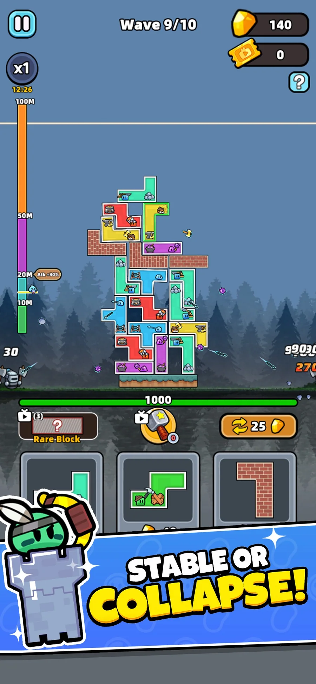
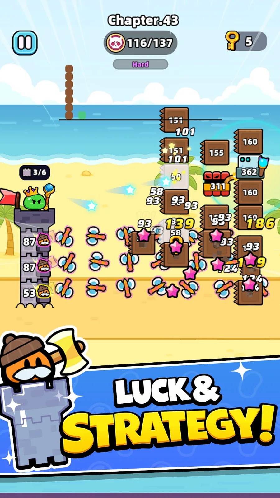
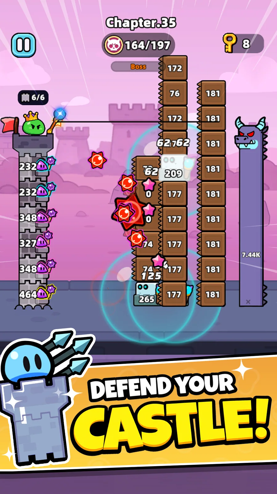

降低理解成本，让玩家尽快看懂“布防—防守—成长—再挑战”的循环。
国内小游戏 · 主策划 · 2025.08–2026.03
关关难不住
这是一款肉鸽塔防小游戏。新增用户被放大之后，真正决定项目能否继续放量的，不只是买量价格，而是首日理解、前七天留存和广告回收能否同时成立。
我参与立项与系统框架，直接负责关卡节奏、塔防养成、玩法数值与 IAA 广告节奏。页面中的项目结果由产品、发行和运营团队共同完成。
抖音小游戏
热门榜前 10
热门榜前 10


公司掌游天下
项目类型肉鸽塔防小游戏 · IAA
团队5 人核心团队
项目阶段立项、原型、首测至上线
01
流量是起点。
流量是起点。
规模增长考验承接能力。
项目的核心压力从“能否起量”转向“起量之后能否承接”。关卡、养成和广告节奏必须同时服务留存与回收。
小游戏用户耐心有限。如果首日玩法难理解、成长目标不明确，买量只会更快放大流失；如果广告频率只追次数，又会破坏体验和回收效率。
用难度节奏和养成目标承接首日之后的挑战，避免内容在几天内被消耗完。
让广告成为节奏的一部分，同时用前七天的广告回收支持后续新增。


02
把“商业目标”
把“商业目标”
拆进玩法节奏。
我的工作不是单独设计广告按钮，而是让关卡节奏、塔防成长和广告触发共同围绕同一段玩家行为。
先让玩家理解，再让玩家追求
前几关控制策略点和操作负担，让胜负原因清楚可见；进入稳定段落后，再通过新敌人、Boss、塔防成长和局外目标持续制造下一步动力。
压缩首日理解成本
关卡前期集中呈现一个主要策略点，减少同时需要判断的信息。让失败能归因，成功能被重复。
建立难度起伏
通过普通关、精英关与 Boss 关形成阶段变化，控制挑战频率和局内成长，避免过平或突然卡死。
让养成反向推动关卡
塔防成长、藏品和周边系统不只是数值堆积，而是给玩家下一轮挑战的具体手段。
把广告放进原有节奏
广告奖励对应复活、资源或额外机会等玩家已经理解的需求，减少为了广告而打断核心操作。
03
增长放缓时，
增长放缓时，
先打开新的入口。
当原玩法增长趋缓，团队选择扩充养成与周边系统，同时加入独立新玩法，尝试打开新的获客入口。
让首日后的玩家有更远目标，同时保持新内容与关卡挑战之间的关系。
承接留存，而不是单纯增加界面在原塔防循环之外增加新的玩法入口，为素材传播和新用户获取提供不同卖点。
寻找新的放量入口根据新系统与关卡节奏重新安排广告点位，避免只通过提高频率追求短期回收。
兼顾体验与 ARPU从“单局塔防”走到“可扩张的小游戏产品”
游戏保留塔防作为主要操作和传播画面，同时把局外成长、阶段目标与广告奖励串起来。玩家先理解单局，再为了关卡推进去追求成长，最后通过新玩法接触新的内容。
新的玩法形态不只扩内容，也承担新的素材卖点和获客入口。
04
规模化结果。
数据统计周期为 2025.08–2026.03。以下为项目阶段性结果，不拆成个人独立战绩。
产品进入规模化获客阶段
项目进入抖音小游戏热门榜前 10。单月新增、留存和 LTV 来自产品、发行与运营共同工作，我的主要贡献集中在玩法与 IAA 节奏。
单月新增1,200 万项目阶段性新增规模
次日留存35%首日玩法理解与体验结果
IAA ARPU¥1.2广告收入 / 用户
D30 LTV¥1130 日用户价值
05
复盘：小游戏的节奏
复盘：小游戏的节奏
就是商业结构。
关卡不是内容消耗单位，广告也不是独立收入按钮。两者共同决定玩家什么时候留下、什么时候离开。
做对的
把首日理解、首周留存和广告回收放在同一套节奏里判断。新增爆发时，团队先补承接结构，而不是只扩大投放。
下一次的改进
更早给不同用户层级建立进度分布和广告耐受边界，避免只看整体平均值。数据好时，也要继续判断是哪一段体验真正有效。